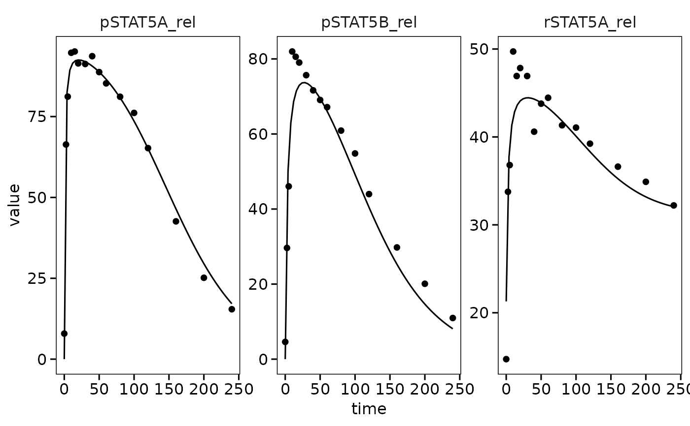

Reads a PEtab v1 or v2 problem, a YAML file with an SBML model and TSV
tables, and builds the dMod problem: prediction, observation and error
functions, parameter transformation, data and objective. The SBML model is
read by importSbml().
Usage
importPEtab(
yamlPath,
backend,
compile = TRUE,
cores = 1L,
modelname = NULL,
derivMode = "forward",
options = NULL,
optionsSens = NULL,
sparse = NULL,
stability = TRUE,
outdir = .dmodOutdir()
)Arguments
- yamlPath
Path to the PEtab YAML manifest.
- backend
Required, one of
"deSolve","cppDE"or"Sundials", passed toodemodel().- compile
Logical. If
TRUE(default), the generated sources are compiled.FALSEleaves them uncompiled for inspection.- cores
Number of parallel compilation jobs, passed to
compile(). Default1.- modelname
Base name of the generated files. Default
NULL, the base name of the YAML file.- derivMode
Derivative directions to build, passed to
odemodel(),Y()andP():"forward"(default),"reverse",c("forward", "reverse")or"none"."reverse"and"none"needbackend = "cppDE"or"Sundials"; with"none"the objective has to be called withderiv = FALSE. First order only.- options, optionsSens
Lists passed to
Xs(): the solver options of every solve and their overrides for the solves with sensitivities. DefaultNULL, the backend's defaults.- sparse
NULL(default) lets the cppDE or Sundials backend choose a sparse (KLU) or dense linear solver;TRUEorFALSEsets it.- stability
If
TRUE(default), a problem with preequilibration gets aconstraintStability()term per steady state inobj, zero on a stable one away from the stability boundary; the steady states are then built with second derivatives.FALSEleaves the term out.- outdir
Directory of the generated sources and shared objects, one source per condition. Default
getOption("dMod2.outdir"), else the working directory.
Value
A list of class "petabproblem" with components dataList,
reactions, odemodel, g, x, p, e, prd (the composite
g * x * p), obj, stability, bestfit, parlower and parupper.
stability is the constraintStability() term in obj, or NULL. With several
models, reactions, odemodel, g, x and p are lists by model id.
obj has the PEtab fixed parameters set; bestfit is the PEtab
nominalValue of each estimated parameter on the PEtab parameterScale,
with the scales in the attribute "petab_scales", and parlower and
parupper are the bounds on that scale. The attribute "petab_meta" of the
list holds what exportPEtabObject() needs, among it the fixed parameters
as fixed, on the linear scale.
Details
Supported: one problem per YAML file with any number of v2 model files;
preequilibration; any number of periods per v2 experiment, those after the
first applied as events, with one schedule for all experiments that start in
the same condition; observable transformations lin, log and log10; the
noise distribution normal, and log-normal in v2; a v2 mapping table.
Priors of the distributions
uniform, normal, log-normal, cauchy, chisquare, exponential,
gamma, laplace, log-laplace, log-uniform and rayleigh, also with
the parameterScale prefix, are added to obj, truncated to the parameter
bounds. A prior without the prefix is on the linear parameter: for a
parameter on log or log10 scale it is the density at the back-transformed
value, without a Jacobian term. Not supported: model languages other than
SBML and other noise distributions.
See also
exportPEtabObject(), readPEtabTables(), importSbml(); the guide
chapter PEtab.
Examples
# \donttest{
yaml <- system.file("extdata/petab_boehm/Boehm.yaml", package = "dMod2")
petab <- importPEtab(yaml, backend = "cppDE", cores = 1, outdir = tempdir())
#> Sparse Jacobian detected (8x8, 21 nnz, 67.188% sparse)
#> Sparse Jacobian detected (8x8, 21 nnz, 67.188% sparse)
#> using C++ compiler: g++
#> every source : -O2 -DNDEBUG -w -fPIC -DKLU -I/usr/include/suitesparse
#> 2 of 5 also : -DKLUBTF=0 -DKLUAMD=0 -fopenmp
petab
#> <PEtab problem Boehm_2>
#> source: /home/runner/work/_temp/Library/dMod2/extdata/petab_boehm/Boehm.yaml
#> conditions: 1 (1 sim, 0 preeq)
#> observables: pSTAT5A_rel, pSTAT5B_rel, rSTAT5A_rel
#> measurements: 48
#> bestfit (n=9): Epo_degradation_BaF3, k_exp_hetero, k_exp_homo, k_imp_hetero, k_imp_homo, k_phos, sd_pSTAT5A_rel, sd_pSTAT5B_rel, sd_rSTAT5A_rel
#> fixed (n=4): ratio, specC17, cyt, nuc
# The objective at the nominal values
petab$obj(petab$bestfit)$value
#> [1] 276.4441
# The prediction needs the fixed parameters
fixed <- attr(petab, "petab_meta")$fixed
times <- seq(0, 240, length.out = 61)
plot(petab$prd(times, c(petab$bestfit, fixed)), petab$dataList)

# Write the problem back to PEtab
yamlOut <- exportPEtabObject(petab, file.path(tempdir(), "boehm"),
formatVersion = "1")
readPEtabTables(yamlOut)$parameters
#> parameterId parameterScale lowerBound upperBound nominalValue
#> 1 Epo_degradation_BaF3 log10 1e-05 1e+05 2.698251e-02
#> 2 k_exp_hetero log10 1e-05 1e+05 1.000680e-05
#> 3 k_exp_homo log10 1e-05 1e+05 6.170228e-03
#> 4 k_imp_hetero log10 1e-05 1e+05 1.636792e-02
#> 5 k_imp_homo log10 1e-05 1e+05 9.774938e+04
#> 6 k_phos log10 1e-05 1e+05 1.576651e+04
#> 7 sd_pSTAT5A_rel log10 1e-05 1e+05 3.852612e+00
#> 8 sd_pSTAT5B_rel log10 1e-05 1e+05 6.591478e+00
#> 9 sd_rSTAT5A_rel log10 1e-05 1e+05 3.152713e+00
#> 10 ratio lin -Inf Inf 6.930000e-01
#> 11 specC17 lin -Inf Inf 1.070000e-01
#> estimate
#> 1 1
#> 2 1
#> 3 1
#> 4 1
#> 5 1
#> 6 1
#> 7 1
#> 8 1
#> 9 1
#> 10 0
#> 11 0
# }